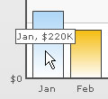
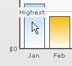
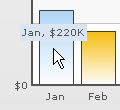
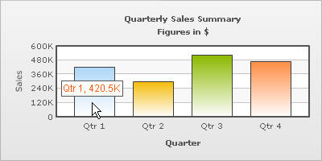
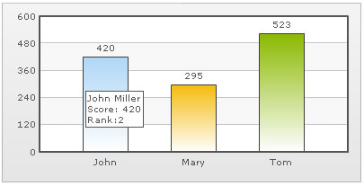

XML Attributes for Tool Tip |
A tool-tip is shown when the mouse is hovered over a particular data point. It shows the following information:
|
|  |
| You can opt not to show the tool tip using showToolTip='0' attribute. |
| <chart showToolTip='0'...> |
| To show the tool-tip without shadow, you may set: |
| <chart showToolTipShadow='0' ...> |
| Custom Tool Text |
You can set a cutom tool tip for any of the data points using tooltext attribute of the <set> element which is used to define the individual data elements. |
<chart caption='Monthly Revenue' xAxisName='Month' yAxisName='Revenue' numberPrefix='$' showValues='0'> |
| The above would yield the following result: |
|  |
| Customizing the tool tip |
You can customize the background & border color of the tool tip using the toolTipBorderColor and toolTipBgColor attributes respetively. The colors should be without the '#' symbol. |
| <chart ... toolTipBorderColor='D9E5F1' toolTipBgColor='D9E5F1'> |
| This would yield the following result: |
|  |
| Using Styles to specify font properties for tool tip |
Using STYLES, you can set individual font properties for different text on the chart. Here, we will customize the font properties of the tool tip using STYLES to have the following end result: |
|  |
| The XML for this chart is as under. To read more on Styles, please see "For Web Developers > FusionCharts and STYLES" section. |
| <chart caption='Quarterly Sales Summary' subcaption='Figures in $' xAxisName='Quarter' yAxisName='Sales' showValues='0' > <set label='Qtr 1' value='420500' /> <set label='Qtr 2' value='295400' /> <set label='Qtr 3' value='523400' /> <set label='Qtr 4' value='465400' /> <styles> <definition> <style name='myToolTipFont' type='font' font='Arial' size='12' color='FF5904'/> </definition> <application> <apply toObject='ToolTip' styles='myToolTipFont' /> </application> </styles> </chart> |
| Tool Tip in multiple lines |
FusionCharts v3 allows you to put your tool tips in multiple lines with a little manual tweaking. Consider the XML below: |
| <chart> <set label='John' value='420' tooltext='John Miller{br}Score: 420{br}Rank:2'/> <set label='Mary' value='295' tooltext='Mary Evans{br}Score: 295{br}Rank:3'/> <set label='Tom' value='523' tooltext='Tom Bowler{br}Score: 523{br}Rank:1'/> </chart> |
In the above XML, to add a line break in the tool-tip, we've used the pseudo code {br}. When you now see the chart, you'll get the following output: |
|  |